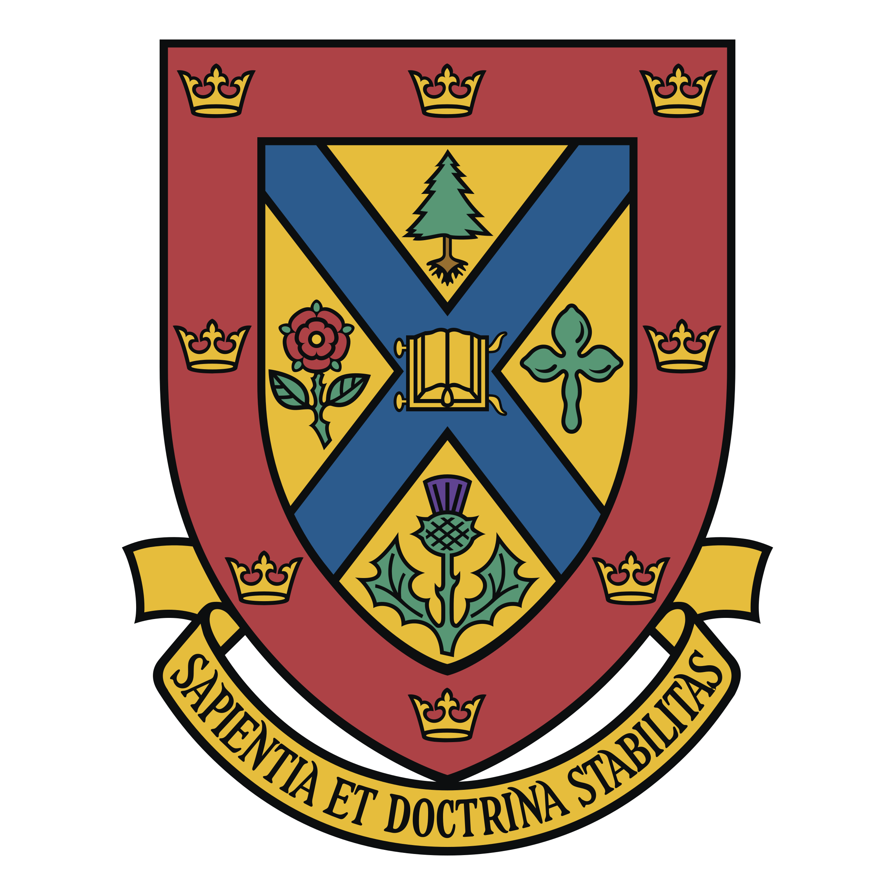

I'm currently a Coleman postdoc at Queen's university in Kingston Ontario.
I am broadly interested in mathematical biology.
Most of my research revolves around using tools
from dynamical systems theory to study bacterial growth and competition.
Research Interests
Microbial Ecology
How do different species of bacteria grow and interact, and how does their environment affect their interactions?
Mathematical Epidemiology
How can we use mathematics to learn about and help prevent the spread of infectious diseases?
Recent Collaborators

Troy Day
Troy is a professor of mathematics and biology at Queens University.
He is mostly interested in evolution. Together, we have been investigating how "persister cells" may have evolved.
Felicia Magpantay
Felicia is a professor of mathematics at Queen's University. She is mostly interested in epidemiology.
Along with some summer research students, we explored the idea of a "reinfection threshold".
Elissa Schwartz
Elissa is a professor of mathematics and biology at Washington State University. She is interested in
virology, immunology, and infectious diseases. We have written a few papers exploring a model of equine infectious anemia virus,
a virus similar to HIV that infects horses.
Benjamin Ridenhour
Ben is a professor of mathematics and biology at the University of Idaho.
Ben is interested in evolution and epidemiology. Ben and I worked on several COVID projects together,
some of which were for the Idaho State Government. We are currently finishing up a project about how to assimilate wastewater data into epidemiological models.
Stacy Smith?
Stacy is a professor of mathematics at the university of Ottawa. She is interested in modeling neglected tropical diseases and impulsive differential equations.
Curriculum Vitae
Education
McMaster University: PhD
2015 — 2019
Supervisor: Gail S.K. Wolkowicz
Thesis Title: Applications of Dynamical Systems to Industrial Microbiology
McMaster University: MSc
2013 — 2015
Supervisor: Stanley Alama
Thesis Title: The Existence of Radially Symetric Vortices in a Ferromagnetic Model of Superconductivity
Brock University: BSc
2009 — 2013
Major: Physics
Thesis Title: Some New Aspects of First Integrals and Symmetries for Central Force Dynamics
Experience
Coleman Postdoctoral Fellow
2019 — Present
Queen's University, With Troy Day and Felicia Magpantay
Postdoctoral Fellow
2019 — 2021
University of Idaho, With Benjamin Ridenhour and Chris Remien
Invited Talks
SMB Annual Meeting July 2023
The Evolution of Persister Cells
CMS Summer Meeting June 2023
Microbial Competition in Serial Transfer Cultures
Fields Institute August 2022
Self-Cycling Fermentation With Multiple Nutrients
CAIMS Summer Meeting June 2022
Self-Cycling Fermentation With Many Possibly Inhibitory Resources
MIDAS Network Annual Meeting May 2021
Analyzing Rural Community Structure Using Agent-Based Modeling and Topological Data Analysis
CMS Winter Meeting December 2020
Self-Cycling Fermentation With a Produced Compound
Joint Mathematics Meetings January 2019
Global Analysis For A Model of Anaerobic Digestion and a New Result For The Chemostat
CMS Winter Meeting December 2017
Global Analysis For A Model of Anaerobic Digestion